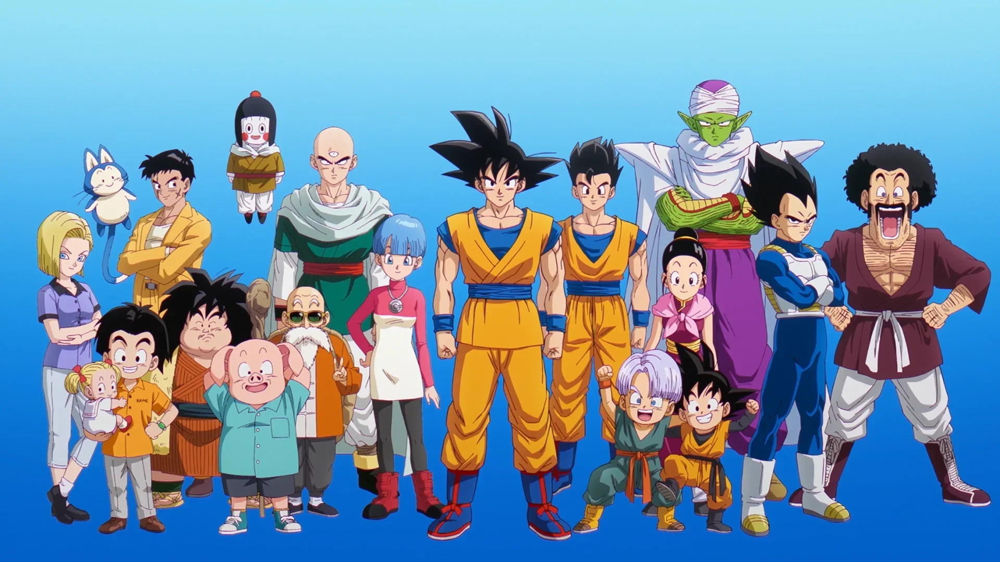

Mappatura degli Archetipi Narrativi nei Media Giapponesi
Progetto d'esame per il corso di Metodologie e tecniche di simulazione
Abstract del Progetto
Questo progetto esplora l'uso combinato di Knowledge Graphs (KGs) e Large Language Models (LLMs) per automatizzare l'estrazione e la formalizzazione della conoscenza nell'ambito della narratologia applicata ai media pop giapponesi (Anime e Manga).
L'obiettivo principale è colmare un significativo gap informativo individuato all'interno di Wikidata: la totale assenza di dati strutturati riguardanti gli archetipi narrativi dei personaggi. Trasformando descrizioni testuali destrutturate in triple RDF, abbiamo costruito un'architettura semantica pronta per essere interrogata.
→ Scopri come abbiamo identificato il gap e definito la pipeline nella sezione Metodologia.

Pipeline & Vocabolario
La definizione dei passi metodologici, degli strumenti utilizzati e delle proposte di estensione del vocabolario tramite RDFS[cite: 1].

Interrogazione SPARQL
I costrutti e i pattern di query impiegati per la simulazione e la verifica dei dati strutturati inseriti nel grafo[cite: 1].

Prompt & LLM Benchmark
L'ingegnerizzazione dei prompt (Zero/Few-Shot) e l'analisi comparativa dei comportamenti tra i diversi modelli linguistici testati[cite: 1].